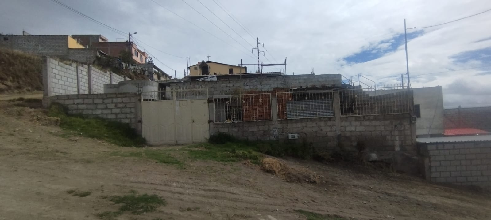
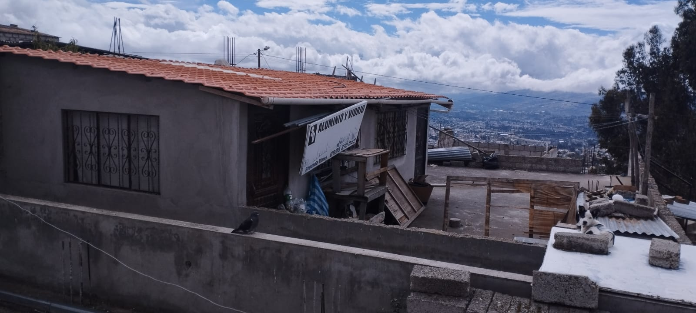
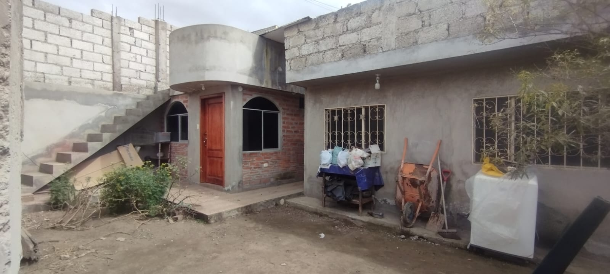
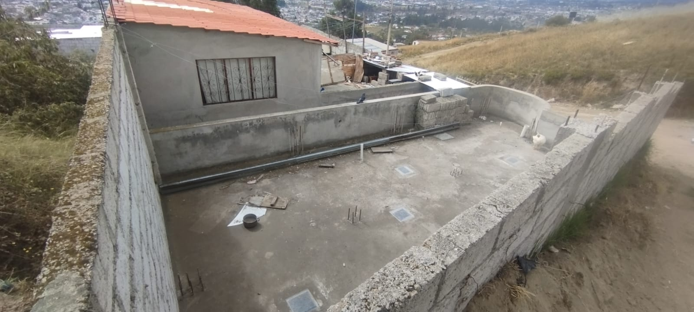
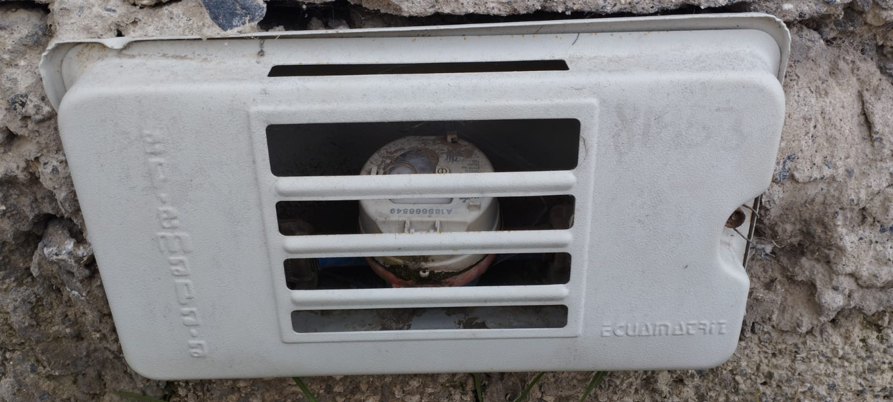
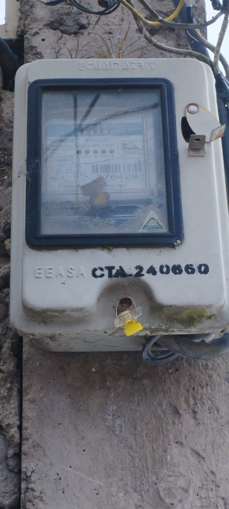

← volver al mapa
Casa - EC-RJ-155423
EC-RJ-155423 · casa · AMBATO, Tungurahua
★ Oferta destacada






Datos del remate
| Avalúo pericial | $50,049 |
| Tipo de bien | casa |
| Área de construcción | 148.10 m² |
| Área de terreno | 205.47 m² |
| Cantón / Provincia | AMBATO, Tungurahua |
| Dirección / Sector | santa rosa. provincia tungurahua, canton ambato, parroquia santa rosa, sector: lomas de garces |
| Señalamiento | Segundo Señalamiento |
| Fecha de remate | 2026-09-04 |
| No. de proceso | 18334202305719 |
Análisis vs. mercado
| Avalúo por m² | $338/m² |
| Mediana de mercado en la zona | $742/m² |
| Descuento vs. mercado | 54.4% |
| Comparables usados | 13 |
| Radio de búsqueda | 800 m |
| Puntaje | 92/100 |
Descripción completa del avalúo
el bien inmueble corresponde a un lote de terreno regular y dos construcciones de hormigón armado en una planta con losa, y una media agua en la terraza hecha de hormigón armado y con techo de galvalumen, ubicado en el sector conocido como lomas de garces en santa rosa, en una calle sin nombre, el lote de terreno se encuentra a nivel de la vía en mención con una topografía semi plana. la forma del terreno es rectangular como se observa en la planimetría adjunta, así como su ubicación parcelaria es esquinera.el bien inmueble cuenta con servicios de agua, luz eléctrica, la vía de acceso al bien inmueble es lastre en mal estado de conservación y uso, no tiene ni aceras ni bordillos.
lote plano rectangular al nivel de la calle existente, con cerramiento en todo el perimetro y construccion aislada de una planta con media agua sobre terraza
provincia tungurahua, canton ambato, parroquia santa rosa, sector: lomas de garces
Análisis de inversión (IA)
⚠ Dudosa — revisar bienEl descuento del 54.4% sobre la mediana de mercado con 13 comparables es llamativo y justifica al menos una investigación preliminar. Sin embargo, la propiedad está en una zona periférica de Ambato con acceso en lastre y en mal estado, sin aceras ni bordillos, lo que limita su liquidez futura y puede explicar parte del descuento. Antes de comprometer cualquier dinero, hay que validar el estado registral, la ocupación y la infraestructura real del sector.
A favor:
- Descuento del 54.4% sobre mediana de mercado respaldado por 13 comparables, muestra suficiente para tomar el dato con cierta seriedad
- Terreno esquinero con topografía semi plana, lo que facilita construcción y acceso
- Dos construcciones de hormigón armado con losa, estructura durable en principio
- Cuenta con servicios básicos de agua y luz eléctrica
- Lote rectangular regular, fácil de lotizar o desarrollar en el futuro
- Cerramiento perimetral existente, reduce inversión inmediata en seguridad
En contra:
- Ubicación en sector Lomas de Garcés, Santa Rosa, zona periférica de Ambato con menor demanda y liquidez de reventa
- Vía de acceso en lastre y en mal estado de conservación, encarece traslados y reduce atractivo comercial
- Sin aceras ni bordillos, indica bajo nivel de urbanización del sector
- La calle no tiene nombre registrado, lo que puede complicar trámites de escrituración o direccionamiento oficial
- El avalúo pericial de $50,049 para 148 m² de construcción y 205 m² de terreno es bajo en términos absolutos, consistente con una zona de baja valorización
Riesgos a verificar:
- No se menciona el estado de conservación de las construcciones ni su antigüedad; la media agua con galvalumen sobre terraza puede indicar construcción informal o ampliación no planificada
- Al ser remate judicial, existe riesgo de ocupantes actuales (inquilinos, posesionarios) que requieran proceso de desahucio o lanzamiento adicional
- Calle sin nombre puede implicar que el predio no está correctamente georreferenciado o que el acceso no está legalmente constituido como vía pública
- No se menciona si existe hipoteca, gravámenes o prohibiciones de enajenar vigentes sobre el inmueble; verificar en el Registro de la Propiedad de Ambato es indispensable
- Zona con infraestructura vial deficiente podría no mejorar en el corto plazo, afectando la valorización esperada
- La descripción habla de 'dos construcciones' separadas; conviene verificar si ambas están dentro del mismo título o si existe alguna construcción sin permiso municipal
Generado por IA a partir de la descripción — no es asesoría legal ni financiera.
Esta ficha es una copia de lo publicado en el sitio oficial de remates
judiciales de la Función Judicial del Ecuador, para consulta — no
reemplaza el expediente judicial. remates.funcionjudicial.gob.ec no da
un link propio por remate, por eso se generó esta página aparte.
Antes de ofertar, el expediente debe revisarlo un abogado.